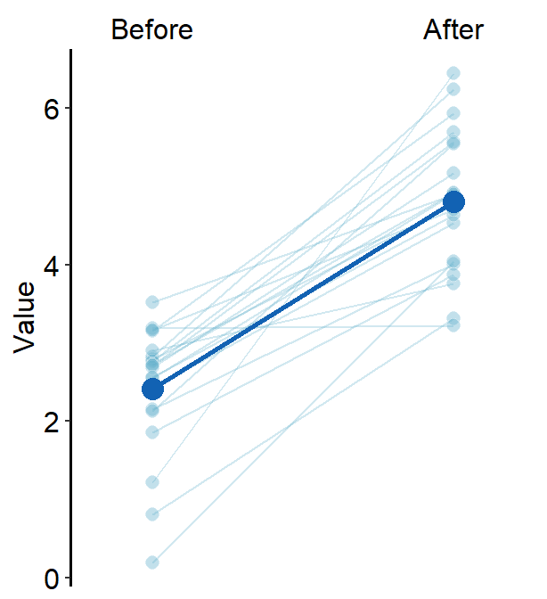
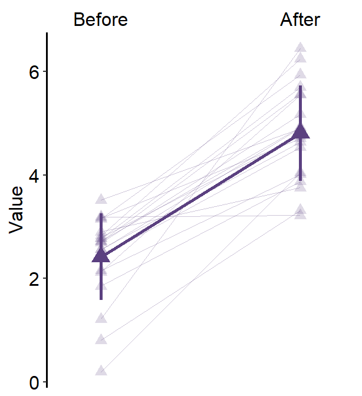

Chapter 5 Data Analysis (in development)
This section is in development. Contents will include dplyr (filter, select) and statistics (t-test, correlation, power analysis etc).
If you wish me to include other topics, please let me know.
5.1 filter for data, select for columns
library(tidyverse)First, you need to load data (.csv file). When you are loading your own .csv file for your data analysis, make sure you place the .csv file of your interest in the folder that has been set to the working directory.
In this example, we will be using data from this paper:
Seung Hyun Min, Alex S. Baldwin and Robert F. Hess. Ocular dominance plasticity: A binocular combination task finds no cumulative effect with repeated patching (2019). Vision Research, 161, 36-42.
We will be creating a similar figure to Figure 2A using smplot. For the PDF copy, please visit https://www.smin95.com/pubs/min2019.pdf.
df <- read_csv('https://raw.githubusercontent.com/smin95/dataviz/master/min2019.csv')
df$Day <- factor(df$Day)
head(df)## # A tibble: 6 x 4
## Subject Day Time Cbratio
## <chr> <fct> <dbl> <dbl>
## 1 S1 1 0 -0.421
## 2 S2 1 0 2.82
## 3 S3 1 0 1.69
## 4 S4 1 0 2.55
## 5 S5 1 0 -0.217
## 6 S6 1 0 0.626There are 4 columns in this dataframe:
First,
Subjectrefers to each participant. There are 10 participants total.Next,
Dayrefers to the day of testing. The participants were tested on Day 1, 2, 3, 4 and 5. We will only use Day from 1 and 5.Timerefers to the number of minutes after an experimental manipulation (ex. monocular deprivation). These are 0, 3, 6, 12, 24 and 48 minutes, but in the dataframe, it says 0, 1, 2, 3, 4 and 5; we will change the labels manually.The
Cbratiocolumn refers to the actual data that will be plotted here.
In the example below, the plots will have different colors based on Day (1 or 5). Therefore, the values in Day column have to be discrete, not continuous. To make them discrte, one needs to convert the Day column from double (continuous variable) to factor (discrete variable).
To plot data of each subject separately, we need the dataframe to show data only from one subject. This can be achieved as shown below:
df %>% filter(Subject == 'S1')## # A tibble: 12 x 4
## Subject Day Time Cbratio
## <chr> <fct> <dbl> <dbl>
## 1 S1 1 0 -0.421
## 2 S1 1 1 0.802
## 3 S1 1 2 1.01
## 4 S1 1 3 0.634
## 5 S1 1 4 -0.245
## 6 S1 1 5 -0.834
## 7 S1 5 0 2.42
## 8 S1 5 1 1.76
## 9 S1 5 2 1.91
## 10 S1 5 3 0.609
## 11 S1 5 4 0.811
## 12 S1 5 5 0.363%>% is called the pipe. The above code can be read as: filter for all rows of the dataframe df that have S1 in the Subject column.
Here is another example.
df %>% filter(Day == 1)## # A tibble: 60 x 4
## Subject Day Time Cbratio
## <chr> <fct> <dbl> <dbl>
## 1 S1 1 0 -0.421
## 2 S2 1 0 2.82
## 3 S3 1 0 1.69
## 4 S4 1 0 2.55
## 5 S5 1 0 -0.217
## 6 S6 1 0 0.626
## 7 S7 1 0 2.62
## 8 S8 1 0 1.42
## 9 S9 1 0 1.54
## 10 S10 1 0 3.05
## # ... with 50 more rowsThe above code can be read as: filter for all rows of the dataframe df that have 1 in the Day column.
Notice that S1 is a character because it has an alphabet. Therefore, it needs to be written as 'S1'. However, 1 of Day is double, which is essentially just a number digit. Therefore, it can be written as 1 with no quotation mark.
Let’s try another example.
df %>% filter(Day == 1) %>% filter(Subject == 'S1')## # A tibble: 6 x 4
## Subject Day Time Cbratio
## <chr> <fct> <dbl> <dbl>
## 1 S1 1 0 -0.421
## 2 S1 1 1 0.802
## 3 S1 1 2 1.01
## 4 S1 1 3 0.634
## 5 S1 1 4 -0.245
## 6 S1 1 5 -0.834The above code can be read as: filter for all rows of the dataframe df that have 1 in the Day column. Then, filter for all rows of the dataframe df that have S1 in the Subject column.
The above can also be written like the one below:
df %>% filter(Day == 1 & Subject == 'S1') ## # A tibble: 6 x 4
## Subject Day Time Cbratio
## <chr> <fct> <dbl> <dbl>
## 1 S1 1 0 -0.421
## 2 S1 1 1 0.802
## 3 S1 1 2 1.01
## 4 S1 1 3 0.634
## 5 S1 1 4 -0.245
## 6 S1 1 5 -0.834The above can be read as: filter for all rows of the dataframe df that have 1 in the Day column AND have S1 in the Subject column.
df %>% filter(Day == 1 | Subject == 'S1') ## # A tibble: 66 x 4
## Subject Day Time Cbratio
## <chr> <fct> <dbl> <dbl>
## 1 S1 1 0 -0.421
## 2 S2 1 0 2.82
## 3 S3 1 0 1.69
## 4 S4 1 0 2.55
## 5 S5 1 0 -0.217
## 6 S6 1 0 0.626
## 7 S7 1 0 2.62
## 8 S8 1 0 1.42
## 9 S9 1 0 1.54
## 10 S10 1 0 3.05
## # ... with 56 more rowsThe above can be read as: filter for all rows of the dataframe df that have 1 in the Day column OR have S1 in the Subject column.
If you wish to see the Cbratio column only (i.e., data only) for rows of df that have Day == 1 and Time == 0, you can write it like this:
df %>% filter(Day == 1 & Time == 0) %>% select(Cbratio)## # A tibble: 10 x 1
## Cbratio
## <dbl>
## 1 -0.421
## 2 2.82
## 3 1.69
## 4 2.55
## 5 -0.217
## 6 0.626
## 7 2.62
## 8 1.42
## 9 1.54
## 10 3.05There are 10 rows (i.e., 10 subjects) in this filtered data frame and 1 column, which is Cbratio. The above can be read as: filter for all rows of the dataframe df that have 1 in the Day column AND have 0 in the Time column.
5.2 Plotting individual data
First, you will need several packages for this section.
- If you do not have the gridExtra and grid packages in your RStudio, please install them using the codes below. It might take less than a minute.
install.packages('gridExtra')
install.packages('grid')- Then load all these packages below.
library(tidyverse)
library(cowplot)
library(smplot)
library(gridExtra)
library(grid)Now let’s plot data for each subject (S1-S9) except S10. Each panel shows the data of each subject for both Days 1 and 5.
df_s1 <- df %>% filter(Subject == 'S1')
# rows of df that only contain S1 in the Subject column
# use df_s1 to plot the data of S1
plot_s1 <- ggplot(data = df_s1, aes(x = Time, y = Cbratio, color = Day)) +
geom_point(size = 4.5) +
geom_smooth(method = 'lm', se = F, size = 0.9) +
# lm = linear regression method
scale_x_continuous(breaks = unique(df$Time),
labels = c("0", "3", "6", "12", "24", "48")) +
sm_hgrid() +
scale_color_manual(values = sm_color('blue','orange')) +
scale_y_continuous(limits = c(-3, 5.5)) +
theme(axis.text = element_text(size = rel(1.5), color = "black"))
# axis text size is 1.5x the original font size.
print(plot_s1)
Then make each one for the other subjects (S2-S9).
df_s2 <- df %>% filter(Subject == 'S2')
plot_s2 <- ggplot(data = df_s2, aes(x = Time, y = Cbratio, color = Day)) +
geom_point(size = 4.5) +
geom_smooth(method = 'lm', se = F, size = 0.9) +
# lm = linear regression method
scale_x_continuous(breaks = unique(df$Time),
labels = c("0", "3", "6", "12", "24", "48")) +
sm_hgrid() +
scale_color_manual(values = sm_color('blue','orange')) +
scale_y_continuous(limits = c(-3, 5.5)) +
theme(axis.text = element_text(size = rel(1.5), color = "black"))
# axis text size is 1.5x the original font size.
print(plot_s2)
df_s3 <- df %>% filter(Subject == 'S3')
plot_s3 <- ggplot(data = df_s3, aes(x = Time, y = Cbratio, color = Day)) +
geom_point(size = 4.5) +
geom_smooth(method = 'lm', se = F, size = 0.9) +
# lm = linear regression method
scale_x_continuous(breaks = unique(df$Time),
labels = c("0", "3", "6", "12", "24", "48")) +
sm_hgrid() +
scale_color_manual(values = sm_color('blue','orange')) +
scale_y_continuous(limits = c(-3, 5.5)) +
theme(axis.text = element_text(size = rel(1.5), color = "black"))
# axis text size is 1.5x the original font size.
print(plot_s3)
df_s4 <- df %>% filter(Subject == 'S4')
plot_s4 <- ggplot(data = df_s4, aes(x = Time, y = Cbratio, color = Day)) +
geom_point(size = 4.5) +
geom_smooth(method = 'lm', se = F, size = 0.9) +
# lm = linear regression method
scale_x_continuous(breaks = unique(df$Time),
labels = c("0", "3", "6", "12", "24", "48")) +
sm_hgrid() +
scale_color_manual(values = sm_color('blue','orange')) +
scale_y_continuous(limits = c(-3, 5.5)) +
theme(axis.text = element_text(size = rel(1.5), color = "black"))
# axis text size is 1.5x the original font size.
print(plot_s4)
# Subject 5
df_s5 <- df %>% filter(Subject == 'S5')
# rows of df that only contain S5 in the Subject column
plot_s5 <- ggplot(data = df_s5, aes(x = Time, y = Cbratio, color = Day)) +
geom_point(size = 4.5) +
geom_smooth(method = 'lm', se = F, size = 0.9) +
# lm = linear regression method
scale_x_continuous(breaks = unique(df$Time),
labels = c("0", "3", "6", "12", "24", "48")) +
sm_hgrid(legends = TRUE) + # show legends for the color
scale_color_manual(values = sm_color('blue','orange')) +
scale_y_continuous(limits = c(-3, 5.5)) +
theme(axis.text = element_text(size = rel(1.5), color = "black")) + # axis text size is 1.5x the original font size.
theme(legend.justification = c(1,0),
legend.position = c(0.96, 0.65))
# location of legend (color label)
print(plot_s5)
# Subject 6
df_s6 <- df %>% filter(Subject == 'S6')
# rows of df that only contain S6 in the Subject column
plot_s6 <- ggplot(data = df_s5, aes(x = Time, y = Cbratio, color = Day)) +
geom_point(size = 4.5) +
geom_smooth(method = 'lm', se = F, size = 0.9) +
# lm = linear regression method
scale_x_continuous(breaks = unique(df$Time),
labels = c("0", "3", "6", "12", "24", "48")) +
sm_hgrid() +
scale_color_manual(values = sm_color('blue','orange')) +
scale_y_continuous(limits = c(-3, 5.5)) +
theme(axis.text = element_text(size = rel(1.5), color = "black"))
# axis text size is 1.5x the original font size.
print(plot_s6)
df_s7 <- df %>% filter(Subject == 'S7')
plot_s7 <- ggplot(data = df_s7, aes(x = Time, y = Cbratio, color = Day)) +
geom_point(size = 4.5) +
geom_smooth(method = 'lm', se = F, size = 0.9) +
# lm = linear regression method
scale_x_continuous(breaks = unique(df$Time),
labels = c("0", "3", "6", "12", "24", "48")) +
sm_hgrid() +
scale_color_manual(values = sm_color('blue','orange')) +
scale_y_continuous(limits = c(-3, 5.5)) +
theme(axis.text = element_text(size = rel(1.5), color = "black"))
# axis text size is 1.5x the original font size.
print(plot_s7)
df_s8 <- df %>% filter(Subject == 'S8')
plot_s8 <- ggplot(data = df_s8, aes(x = Time, y = Cbratio, color = Day)) +
geom_point(size = 4.5) +
geom_smooth(method = 'lm', se = F, size = 0.9) +
# lm = linear regression method
scale_x_continuous(breaks = unique(df$Time),
labels = c("0", "3", "6", "12", "24", "48")) +
sm_hgrid() +
scale_color_manual(values = sm_color('blue','orange')) +
scale_y_continuous(limits = c(-3, 5.5)) +
theme(axis.text = element_text(size = rel(1.5), color = "black"))
# axis text size is 1.5x the original font size.
print(plot_s8)
# Subject 9
df_s9 <- df %>% filter(Subject == 'S9')
plot_s9 <- ggplot(data = df_s9, aes(x = Time, y = Cbratio, color = Day)) +
geom_point(size = 4.5) +
geom_smooth(method = 'lm', se = F, size = 0.9) +
# lm = linear regression method
scale_x_continuous(breaks = unique(df$Time),
labels = c("0", "3", "6", "12", "24", "48")) +
sm_hgrid() +
scale_color_manual(values = sm_color('blue','orange')) +
scale_y_continuous(limits = c(-3, 5.5)) +
theme(axis.text = element_text(size = rel(1.5), color = "black"))
# axis text size is 1.5x the original font size.
print(plot_s9)
Now let’s put them together in a 3x3 figure (3 rows, 3 columns) using the function plot_grid from the cowplot package. Here is the illustration of what we are going to do.

Figure 5.1: 3x3 figure. It has 3 columns and 3 rows
When you are saving the graph as an image file, nrow and ncol in save_plot() have to match the values in plot_grid() as shown below.
plot_grid() is a function that puts different graphs together (ex. 3x3 structure).
save_plot() is a function that saves a selected graph into an image or PDF file (or eps, etc).
together1 <- plot_grid(plot_s1, plot_s2, plot_s3,
plot_s4, plot_s5, plot_s6,
plot_s7, plot_s8, plot_s9,
ncol = 3, # 2 columns in the final figure
nrow = 3, # 2 rows in the final figure
align = 'hv',# set to the same horizontal and vertical # lengths of each panel.
labels = c('S1','S2', 'S3', 'S4','S5','S6',
'S7','S8','S9'), # each panel label
label_x = 0.14,# horizontal position of the panel's
# label relative to each panel. 0 is the very
# left of the plot.
label_y = 0.97) # vertical position of the panel's
# label relative to each panel. 1 is the very
# top of the plot.
print(together1)
save_plot('together1.png',together1,nrow=3,ncol=3,base_asp=0.95)
# save as an image. ncol and nrow in save_plot()
# nrow and ncol in save_plot() have to match the values in plot_grid() as shown above. Open together1.png in your directory folder. Notice that the png file may look different from the one printed in your RStudio screen or on the browser as shown in this guide. As long as your png file looks good, it should be okay.
Note that are some repeating x and y-axes labels. We can remove them. For instance, the top left panel’s x-axis labels can be removed because the bottom left panel also has the x-axis labels.
Another instance is that the y-axis labels of the top right panel can be removed because the top left panel has the same label.
Also, it seems that there are some empty space between amongst panel. Let’s remove them by reducing the margin of each panel. For more information about the function plot_grid, please type ?plot_grid in the console.
We will use the function
sm_common_axis()to resolve these issues.sm_common_axis()has an argument calledlocation. This refers to the location of each panel in the combined figure that you will make.The picture here illustrates what you will need to write for
locationin the functionsm_common_axis().Example:
sm_common_axis(location = 'topleft')for the very top left panel of the 3x3 combined figure.

Figure 5.2: Arguments for location in sm_common_axis for 3x3 figure.
plot_s1_b <- plot_s1 + sm_common_axis(location = 'topleft')
plot_s2_b <- plot_s2 + sm_common_axis(location = 'topcenter')
plot_s3_b <- plot_s1 + sm_common_axis(location = 'topright')
plot_s4_b <- plot_s4 + sm_common_axis(location = 'topleft')
plot_s5_b <- plot_s5 + sm_common_axis(location = 'topcenter')
plot_s6_b <- plot_s6 + sm_common_axis(location = 'topright')
plot_s7_b <- plot_s7 + sm_common_axis(location = 'bottomleft')
plot_s8_b <- plot_s1 + sm_common_axis(location = 'bottomcenter')
plot_s9_b <- plot_s9 + sm_common_axis(location = 'bottomright')
together2 <- plot_grid(plot_s1_b, plot_s2_b, plot_s3_b,
plot_s4_b, plot_s5_b, plot_s6_b,
plot_s7_b, plot_s8_b, plot_s9_b,
ncol = 3, # 2 columns in the final figure
nrow = 3, # 2 rows in the final figure
align = 'hv',# set to the same horizontal and vertical
# lengths of each panel.
labels = c('S1','S2', 'S3', 'S4','S5','S6',
'S7','S8','S9'), # each panel label
label_x = 0.07) # horizontal position of the panel's
# label relative to each panel.
# 0 is the very left of the plot.
print(together2)
save_plot('together2.png',together2,nrow=3,ncol=3,base_asp=0.95)
# save as an image. ncol and nrow in save_plot()
# nrow and ncol in save_plot() have to match the
# values in plot_grid() as shown above. Open together2.png in your directory folder. I think it looks a lot cleaner!
If you are planning to make 1x3 figure (1 row, 3 columns), here is the illustration.

Figure 5.3: Arguments for location in sm_common_axis for 1x3 figure.
If you are planning to make 2x2 figure (2 rows, 2 columns), here is the illustration.

Figure 5.4: Arguments for location in sm_common_axis for 2x2 figure.
We are almost done now. You need to add the y-axis label ('Contrast balance ratio'), x-axis label ('Minutes after monocular deprivation') and the title ('Recovery of the patching effect') as shown in the original paper (Vision Research 2019).
You can do this in Adobe Illustrator or directly in R. Here, I present a solution with R.
You don’t have to understand the codes below to use the codes.
title <- ggdraw() +
draw_label('Recovery of the patching effect',
size = 17, hjust = 0.45, vjust = 1.2) # title of the combined plot.
# vjust controls the vertical position of the title.
# hjust controls the horizontal position of the title.
plot_with_title <- plot_grid(title, together2, ncol = 1,
rel_heights = c(0.1 ,1))
# add the title and the combined plot together
combined_plot <- add_sub(plot_with_title,
"Minutes after monocular deprivation",
y = 0, vjust = -.3, size = 17)
# add x-axis title to the combined plot
# add y-axis title to the combined plot
combined_plot <- grid.arrange(combined_plot, left = textGrob("\u0394 Contrast Balance Ratio (dB)", gp = gpar(fontsize = 17), rot = 90))
save_plot("combined_plot.png", combined_plot, ncol = 3, nrow = 3,
base_aspect_ratio = .9, limitsize = F)Open combined_plot.png file in your directory folder. Does it look similar to the one in the web browser? On my computer, they look very different, and I much prefer the png file.
To be honest, for adding the titles of the axes and the graph, using Adobe Illustrator might be much easier. I just included the codes here to demonstrate that everything, however, can be done in R.
If you do not understand some of these functions, you can type in your console ?add_sub, ?grid.arrange to learn about these functions.
An astute reader will realize that the codes are quite repetitive. Could the codes be shortened? The answer is yes! However, this method is quite complex and is beyond the scope of this book.